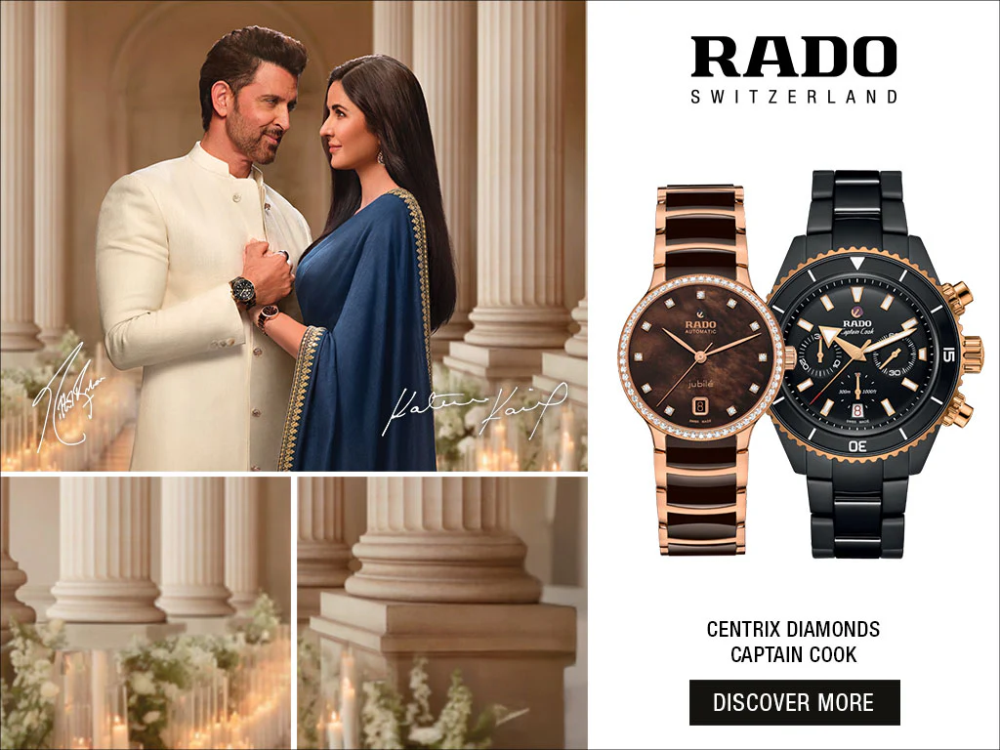
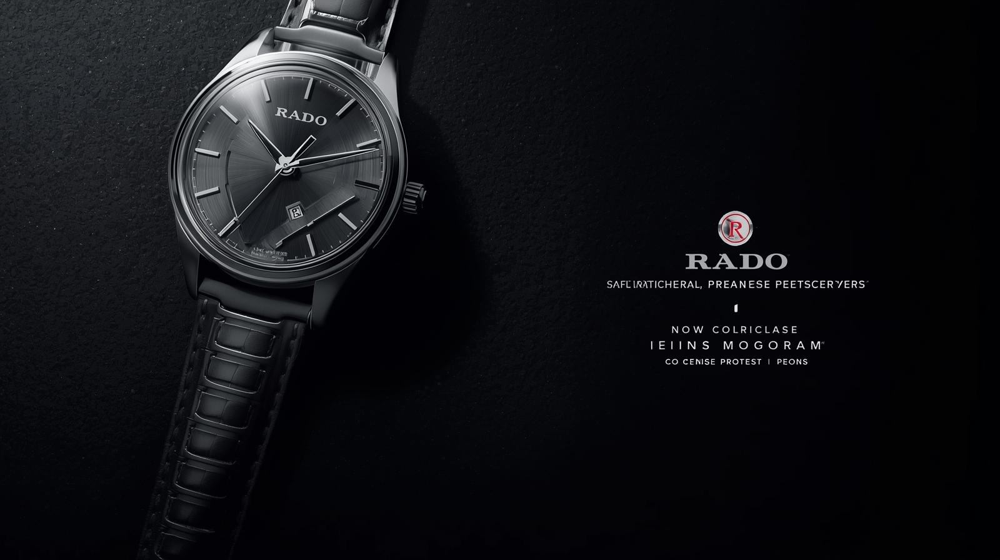
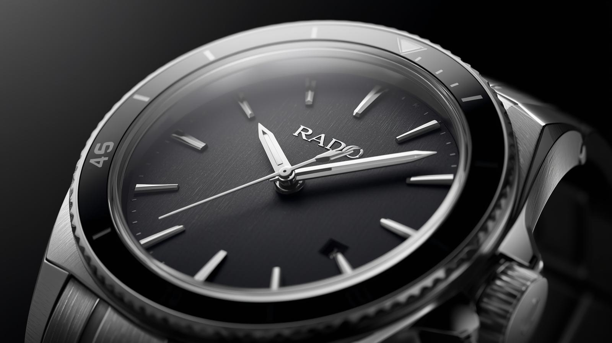

Innovation
We continuously explore advanced materials for better comfort and durability.
For over six decades, Rado has been a pioneer in Swiss watchmaking, known for its innovation, precision, and distinctive design philosophy. Every Rado timepiece reflects a perfect balance of aesthetics and advanced engineering.
Renowned as the “Master of Materials,” Rado continuously pushes boundaries by using high-tech ceramic, sapphire crystal, and cutting-edge materials that ensure durability and comfort.
From iconic collections to modern classics, Rado watches are designed for individuals who appreciate timeless elegance, innovation, and uncompromising quality in every moment of life.

Core principles behind every Rado watch.
We continuously explore advanced materials for better comfort and durability.
Swiss watchmaking standards guide every movement, case, and finishing detail.
Elegant silhouettes and balanced proportions keep every watch relevant for years.
Highlights from the Rado story.

